판타지 웹툰 추천 TOP 30
마법·이세계·헌터 이야기를 좋아한다면 이 목록부터 보세요. 네이버웹툰·카카오웹툰·레진코믹스에서 조건에 맞는 작품 685개 중 인기 순으로 30개를 골랐어요. 인기 TOP 3: 가드패스, 신의 탑, 나 혼자만 레벨업 : 라그나로크
2026-10-11 기준 · 성인 작품 제외
내 취향으로 더 좁혀서 추천받기 →-
1
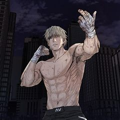
카카오웹툰가드패스
평소 먹는 것을 좋아해 뚱뚱하고 큰 체격을 가진 '임세준'. 그는 뚱보라는 놀림에도 신경 쓰지 않는 자존감이 높고 확고한 성격을 가졌다. 그에게 단 한 명의 친구 '서하진'. 그녀는 어릴 적부터 세준을 지켜주기 위해 늘 운동을 배워왔다. 어느 날 세준은 같은 반 일진과 트러블이 생기고…
판타지사이다학원물배틀카카오웹툰에서 보기 → -
2
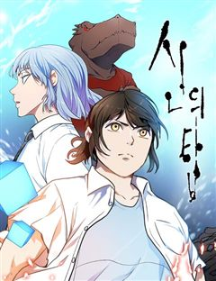
-
3
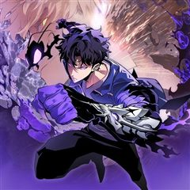
카카오웹툰나 혼자만 레벨업 : 라그나로크
"평범한 대학생으로 살아가던 성수호. 죽음을 앞둔 순간, 잠들어 있던 그의 특별한 혈통이 깨어난다! “일어나라.” 죽음을 거스르고 지배하는 헌터, 그가 선보이는 새로운 레벨업을 주목하라!"
판타지학원물게임판타지카카오웹툰에서 보기 → -
4
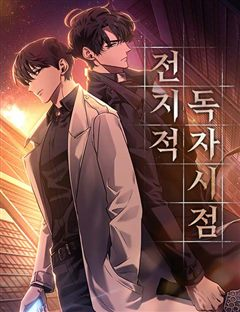
네이버웹툰전지적 독자 시점
'이건 내가 아는 그 전개다' 한순간에 세계가 멸망하고, 새로운 세상이 펼쳐졌다. 오직 나만이 완주했던 소설 세계에서 평범했던 독자의 새로운 삶이 시작된다.
판타지레드아이스 스튜디오게임세계관아포칼립스네이버웹툰에서 보기 → -
5
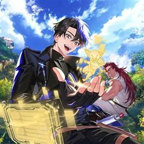
카카오웹툰SSS급 죽어야 사는 헌터
F급 말단 헌터 ‘김공자‘. 랭킹 1위 ‘염제‘를 부러워하던 어느 날, 무려 S+급 스킬을 얻는다. 하지만 기쁨도 잠시, 어째 스킬 내용이 이상하다?! 상대의 스킬 중 1개를 복사한다,까지는 좋은데… "뭐? 내가 죽어야만 발동된다고?!" 죽어야 사는 헌터의 인간찬가 <SSS급 죽어야…
판타지눈물샘자극학원물회귀카카오웹툰에서 보기 → -
6
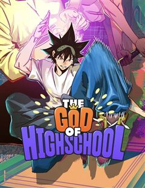
네이버웹툰갓 오브 하이스쿨
전국, 전세계 고등학생 중 가장 쎈 녀석을 뽑는 대회가 열린다. 허구 100% 막장 액션의 끝!! 기대하시라!!!
판타지몰아보기명작이능력배틀물먼치킨네이버웹툰에서 보기 → -
7
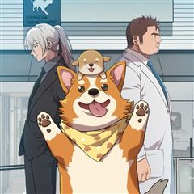
카카오웹툰무지개다리 파수꾼
돈과 성공만을 전부로 알던 유명 수의사 이한철. 그는 어느 날 사고 이후, 동물들의 목소리를 들을 수 있게 된다. 그렇게 동물 병원을 찾은 여러 동물들의 이야기를 듣던 어느 날, 길에서 만난 강아지 밍구의 살려달라는 목소리를 듣게 되는데.. 동물의 목소리를 듣는 수의사 이한철, 동물을…
판타지눈물샘자극사이다카카오웹툰에서 보기 → -
8
 카카오웹툰
카카오웹툰백작가의 망나니가 되었다
눈을 떠보니 소설 속이었다. 그것도 망나니로 유명한 백작가의 도련님 몸으로…. 그리고, 소설 속에서 나를 박살 냈던 막강한 주인공 최한이 곧 여기로 온다.
판타지미스터리빙의카카오웹툰에서 보기 → -
9
 카카오웹툰
카카오웹툰수린당 성군전
[수린당 성군전] 선계와 인간계를 이을 단 한 명의 성군, ‘한울’. 지덕체를 두루 갖춘 완벽한 아이의 탄생에 선계의 신들은 신이 났다. 그것도 아주 지나치게! 과도한 기대는 때론 독이 될 수도 있는 법. 한울이를 금쪽이가 되지 않게 밝고 바른 아이로 키울 수 있을까? 성군의 운명을…
판타지힐링카카오웹툰에서 보기 → -
10
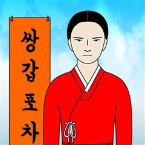
카카오웹툰쌍갑포차
예상치 못한 시간, 예상치 못한 장소에 나타나는 쌍갑포차! 쌍갑포차를 운영하는 월주는 과연 누구일까? 쌍갑포차에 찾아오는 다양한 손님들의 감동적인 이야기! 한국 전통 신화 이승과 저승을, 꿈의 세계 그승과 함께 재창조한 세계관으로, 덤덤하게 써 내려진 깊이 있는 사람들의 사연 속 조선…
판타지공감눈물샘자극옴니버스카카오웹툰에서 보기 → -
11
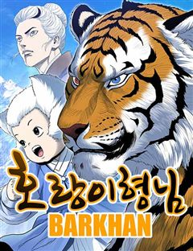
네이버웹툰호랑이형님
신비한 힘을 가진 아이를 이용하여 세상을 지배하려는 반인반수 흰눈썹! 그리고 얼떨결에 아이의 보호자가 된 괴물호랑이 빠르와 착호갑사 지망생 가우리! 이제 힘을 합쳐 흰눈썹으로부터 아이와 세상을 지켜라!!!
판타지명작세계관동양풍판타지판무네이버웹툰에서 보기 → -
12
 네이버웹툰
네이버웹툰고수
<용비불패> 최강의 콤비가 무협의 전설을 다시 쓰다! 천하제일의 고수 강룡. 그리고 수많은 다른 고수들의 이야기.
판타지몰아보기명작복수극먼치킨네이버웹툰에서 보기 → -
13카카오웹툰
지옥사원
인간의 음식에 매료된 악마 쿼터, 사고로 흙수저 인간에게 빙의하다?! 능력을 모두 잃고 인간 <고순무>의 몸에 갇힌 악마는, ‘낮은 등급’ 인간의 삶이 지옥에서의 삶보다 질이 떨어지자 ‘높은 등급’ 인간이 되기로 결심한다. 한 편, 국내 최고의 대기업 <선호 그룹>에선 학력과 경력을…
판타지오피스카카오웹툰에서 보기 → -
14
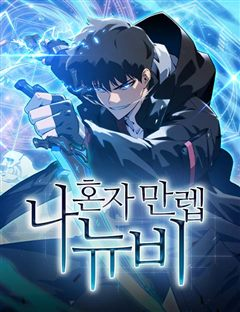
네이버웹툰나 혼자 만렙 뉴비
게임 너튜버로 활동 중인 주인공 진혁은 유일하게 [시련의 탑]의 엔딩을 봤지만, 게임의 인기가 하락하며 더 이상 게임 너튜버로서의 삶도 유지하기 힘들어진다. 엔딩을 보았기에 이대로 게임을 마무리하려는 진혁. 바로 그날, [시련의 탑]은 현실이 되었다. 게임의 모든 요소를 다 알고 있는…
판타지레드아이스 스튜디오사이다하렘게임네이버웹툰에서 보기 → -
15
 카카오웹툰
카카오웹툰재앙급 영웅님이 귀환하셨다
지상에 최강의 영웅이 있었다. “하지만 죽었잖아. 우리가 죽인 놈이 어떻게 돌아와?” “그러게. 돌아올 수 있으면 한번 돌아와 보라지.” 그런데 20년 만에 진짜 돌아와 버렸다? “뭘 그리 놀래? 왜. 양심에 찔릴 짓이라도 하셨나?” 이 XX들. 가만 안 둔다.
판타지사이다학원물복수극카카오웹툰에서 보기 → -
16
 네이버웹툰
네이버웹툰사신소년
수명을 대가로 죽은 자의 능력을 빌리는 소년! 화려한 액션에서 부터 스포츠, 두뇌 플레이까지 한계는 없다!
판타지액션판타지학원액션현대동양네이버웹툰에서 보기 → -
17
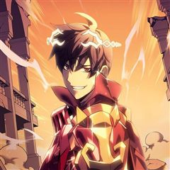
카카오웹툰템빨
[신영우 (유저 네임: 그리드)] 세계 최고의 가상 현실 게임 <SATISFY>. 현실에서나, 게임 속에서나, 불운은 항상 그의 곁을 맴도는데.... 퀘스트 수행 중 우연히 발견한 게임 속 로또, '파그마의 기서'. 20억 명이 넘는 유저 중 유일한 최강의 레전드리 직업으로 전직. "…
판타지사이다학원물게임판타지카카오웹툰에서 보기 → -
18
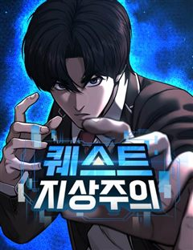
네이버웹툰퀘스트지상주의
[외모지상주의], [싸움독학], [인생존망]과 세계관을 공유하는 작품! 공부, 싸움, 외모. 뭐 하나 잘난 것 없는 평범한 고등학생 ‘김수현’의 눈앞에 갑자기 퀘스트창이 나타났다! 첫 번째 퀘스트, [엄마한테 사과하기]를 완료한 수현은 보상으로 키가 3cm 커지게 되는데! 퀘스트 엄청…
판타지사이다집착녀현대게임네이버웹툰에서 보기 → -
19
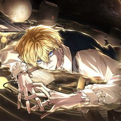
카카오웹툰무한의 마법사
마굿간에 버려져 평민으로 키워진 아이, 시로네. 타고난 통찰력으로 글까지 깨우친 아이는 도시로 나간 어느 날 그토록 궁금해하던 마법을 경험한다. 그 길로 마법사를 꿈꾸게 된 시로네. 하지만 신분의 장벽이 두터운 이 곳은 아이에게 냉혹하고, 그는 채 어른이 되기도 전에 이 세상의 이면을…
판타지미스터리학원물성장물카카오웹툰에서 보기 → -
20
 카카오웹툰
카카오웹툰철혈검가 사냥개의 회귀
바스커빌 가문의 사냥개 '비키르'. 사냥개로서 가문에 충성한 보답은 모함과 누명으로 얼룩진 단두대의 칼날이었다. "다시는 토끼를 잡고 나면 삶아지는 사냥개처럼 살지 않겠노라." 그런 그에게 죽음 대신 찾아온 뜻밖의 기회. 어둠 속에서 송곳니를 갈고닦는 비키르의 눈이 붉게 빛났다. "기…
판타지학원물복수극카카오웹툰에서 보기 → -
21
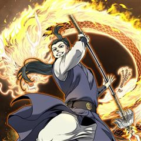
카카오웹툰로그인 무림
세상의 경계인 게이트에서 몬스터 사냥을 하는 헌터들이 잘 먹고 잘 사는 시대. 주인공 진태경은 최하위 헌터라 벌이가 시원찮다. 어느 날, 낡은 VR 게임기를 줍게 되고 접속하니 무림의 세계가 펼쳐진다. 우여곡절 끝에 현실로 돌아온 태경은 무림에서 얻었던 힘이 현실에서도 그대로 남아있음…
판타지개그서스펜스액션게임판타지카카오웹툰에서 보기 → -
22
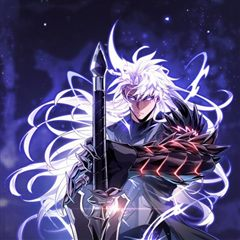
카카오웹툰픽 미 업!
그 누구도 던전의 끝까지 오르지 못한 극악의 난이도를 자랑하는 모바일 가챠 게임 <픽 미 업!(Pick me up!)> 마스터 오브 마스터라 불리는 세계 랭킹 5위의 마스터 '로키'는 던전을 깨던 중 정신을 잃게 된다. 깨어나 보니 레벨도 1, 등급도 1성인 <픽 미 업!> 속 영웅…
판타지사이다액션게임판타지카카오웹툰에서 보기 → -
23
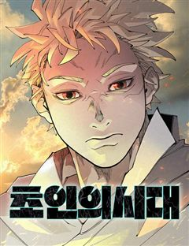
네이버웹툰초인의 시대
지구에 근원 모를 괴물들이 출현하고 그들을 제압하는 '초인'들 또한 등장한다. 정체불명의 괴물과 초인, 바야흐로 '초인의 시대'가 도래한다!
판타지액션판타지현대소년물최강자전네이버웹툰에서 보기 → -
24
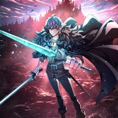
카카오웹툰빌어먹을 환생
마왕을 없애기 위해 용사와 함께 모험을 하던 하멜. 마왕과의 대결 직전 용사 베르무트 라이언하트를 구하고 대신 죽음을 맞이하게 된다. 그리고 300년 후. 하멜은 용사의 머나먼 후손인 유진 라이언하트로서 환생한다. 죽기 전의 육체보다 월등한 성능을 가진 천재로서. 전생의 경험을 토대로…
판타지환생카카오웹툰에서 보기 → -
25
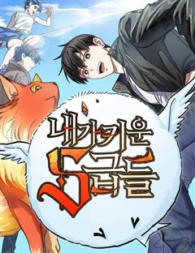
네이버웹툰내가 키운 S급들
F급 헌터. 그것도 잘나가는 S급 동생 발목이나 잡는 쓸모없고 찌질한 F급 형. 개판된 인생 대충 살다가 결국 동생 목숨까지 잡아먹고 회귀한 내게 주어진 칭호, '완벽한 양육자'. 그래, 이번에는 나대지 말고 얌전히 잘난놈들 뒷바라지나 해 주자. 라고 생각했는데, S급들이 좀 이상하다.
판타지현대판타지현대상태창크리처네이버웹툰에서 보기 → -
26
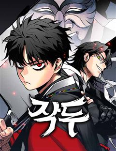
-
27
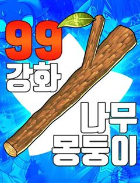
네이버웹툰99강화나무몽둥이
약육강식이 진리인 가상 현실 게임 '크로노 라이프'. 허접이라며 무시만 당하던 '나'는 우연히 얻은 초보용 기본 무기 '나무 뭉둥이' 를 +99 강화까지 성공하게 되고, 본인을 무시하던 놈들을 찾아다니며 몽둥이로 무자비하게 패기 시작하는데..! 막장 스케일 사이다 액션 스타트!!
판타지사이다게임유혹녀명랑녀네이버웹툰에서 보기 → -
28
 네이버웹툰
네이버웹툰별을 품은 소드마스터
기사를 동경하는 슬럼가의 부랑아 블라드. 검은 벼락을 맞는 사고 이후부터 들리기 시작한 누군가의 목소리와, 어느 날 갑자기 등장한 푸른 달빛의 기사가 블라드의 세계를 산산조각내면서 뒷골목 소년의 삶이 송두리째 변하기 시작하는데... 높디높은 밤하늘에 있지 않더라도, 아무도 보지 못하는…
판타지중세판타지액션시리어스서양소년물네이버웹툰에서 보기 → -
29
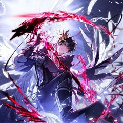
카카오웹툰만렙 플레이어의 100번째 회귀
전세계적으로 15세부터 29세는 무조건 참가해야 하는 총 20라운드의 데스게임. 이 게임에 회귀특성으로 100번째 도전을 시작하게 된 주인공이 99번의 경험으로 얻은 정보를 이용해 남들보다 압도적으로 강해지는 사이다물. 마지막 라운드의 조건이 최소 5명인 걸 깨닫고, 실패를 반복하지…
판타지미스터리학원물성장물카카오웹툰에서 보기 → -
30
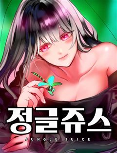
네이버웹툰정글쥬스
의문의 벌레약 ‘정글쥬스’로 인해 곤충인간이 되었다. 이를 숨기며 살던 대학생 장수찬은 어느 날 그 모습을 모두에게 보이게 되고, 곤충인간들의 사회로 들어가 약육강식의 논리와 맞서 싸우게 되는데... 각양각색 곤충능력자들의 판타지 액션 슈퍼스트링 유니버스의 새로운 히어로 등장!
판타지현대판타지열혈캠퍼스현대네이버웹툰에서 보기 →